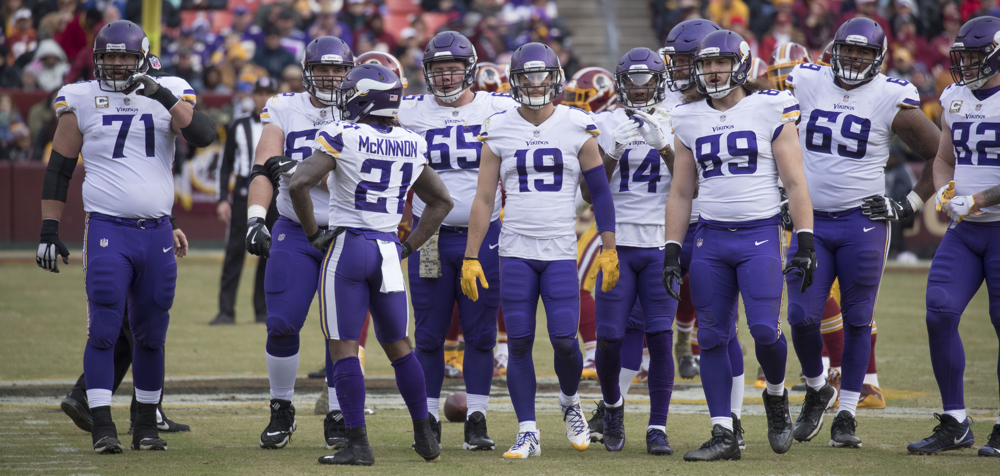
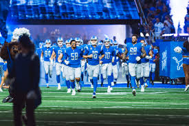

On November 9, 2008, the Lions honored the 75th Season All-Time Team during halftime against the Jacksonville Jaguars.The team was chosen via an online fan poll and selection committee. Bold indicates those elected to the Pro Football Hall of Fame.
The Vikings' flagship radio station is KFXN-FM (100.3), which uses the branding "KFAN" based on its former calls on 1130 AM before a format flip between the AM and FM stations before the 2011 season; 1130 AM also continues to broadcast game play-by-play as KTLK.
The games are also heard on the "KFAN Radio Network" in Minnesota, Wisconsin, Iowa, South Dakota, and North Dakota, as well as many other outlets. Paul Allen has been the play-by-play announcer since the 2002 NFL season with Pete Bercich filling in as analyst, who began his first season in 2007.
Rampage has been the team's official mascot since 2010, being voted by fans whilst the team was still located in St. Louis. Rampage has grown a substantial level of enjoyment from Rams fans and players alike given his upbeat, energetic demeanor.


.jpeg)